Lake Trout Stable Isotope and Habitat Use
Purpose:
To understand if fish that were captured from different basins have different habitat use (e.g., movement, temperature, and depth) that influences movement patterns and stable isotope signatures
Calculating Movement:
To determine the average amount of movement per month we used detection data, prepared for a network analysis that identified when a fish moved from one receiver grouping to another. The number times a fish moved between the same two locations was recorded and the shortest distance among all combinations of receiver groups was determined.

Once we have the number of trips between two locations calculated we multiplied it by the shortest distance between two locations. Total movement was calculated for each month by summing all distances. The average over the course of 12 months was taken and the cubed root was used to scale the data. The movement data then can be tied to each stable isotope and analyzed for patterns.
\(\delta^{13}\)C versus \(\delta^{15}\)N with movement as colour
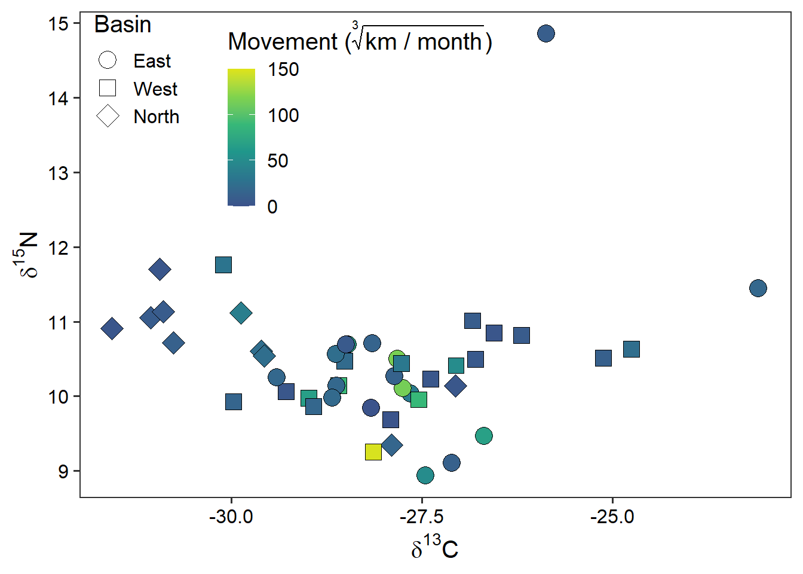
\(\delta^{15}\)N versus Movement ± sd with colour as basin
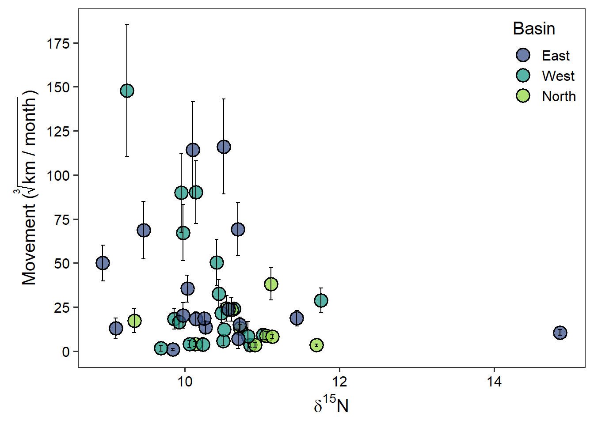
\(\delta^{13}\)C versus Movement ± sd with colour as basin
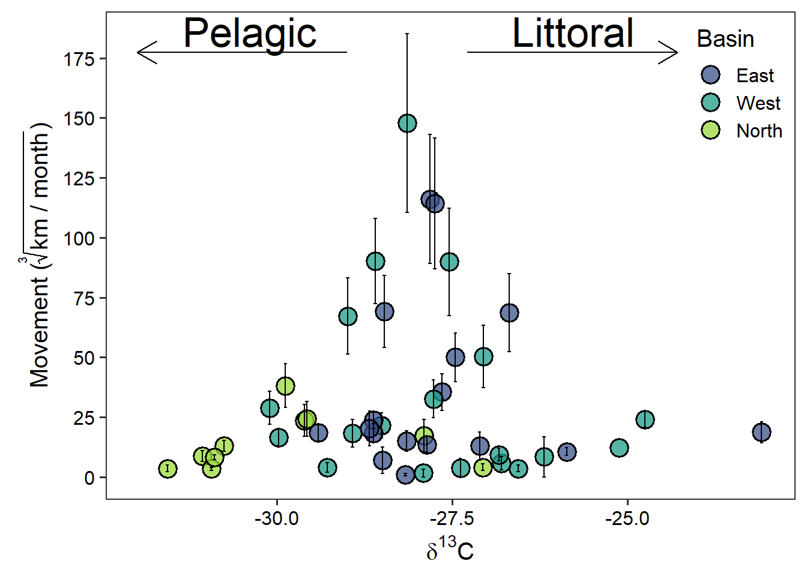
\(\delta^{13}\)C versus mean depth use ± sd with colour as basin
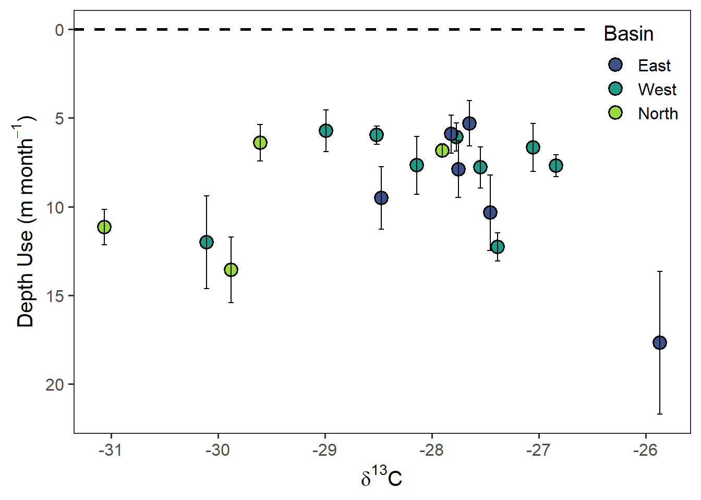
\(\delta^{13}\)C versus mean temperature use ± sd with colour as basin
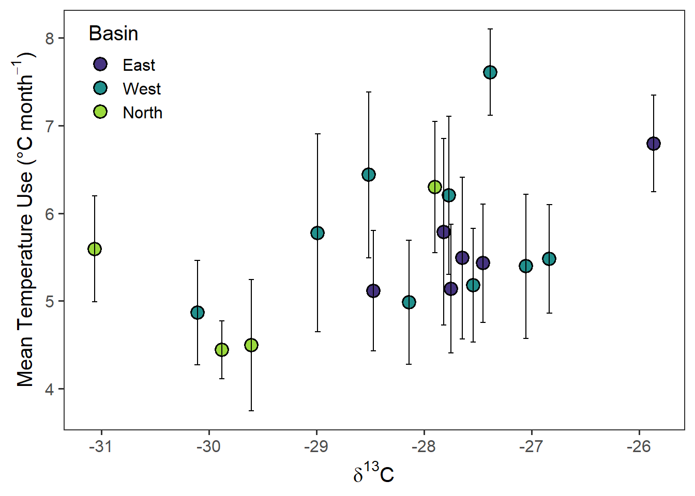
Bayesian von Bertalanffy Growth Model
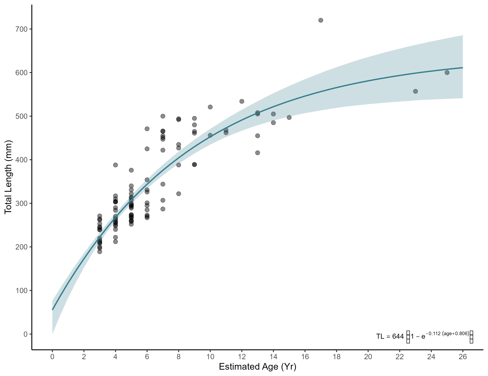
Bayesian von Bertalanffy Growth Model For Each Basin
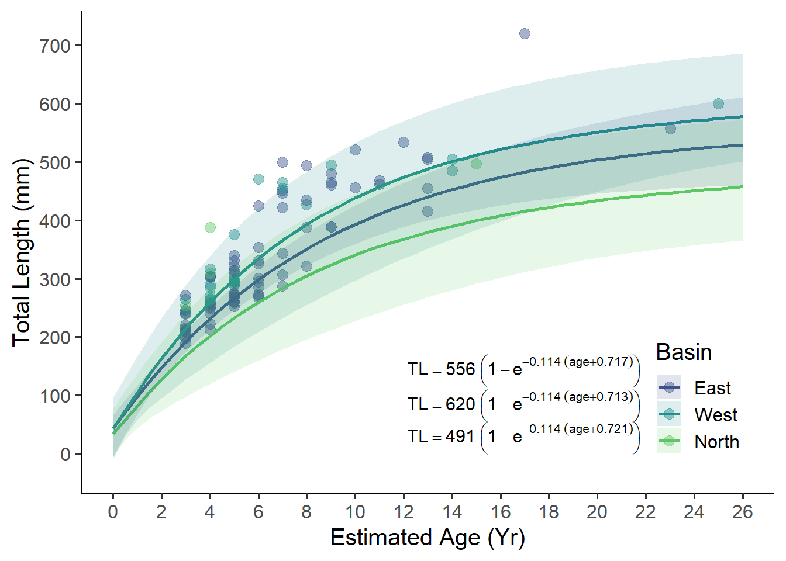
Posterior Distrubtion for von Bertalanffy Growth Model
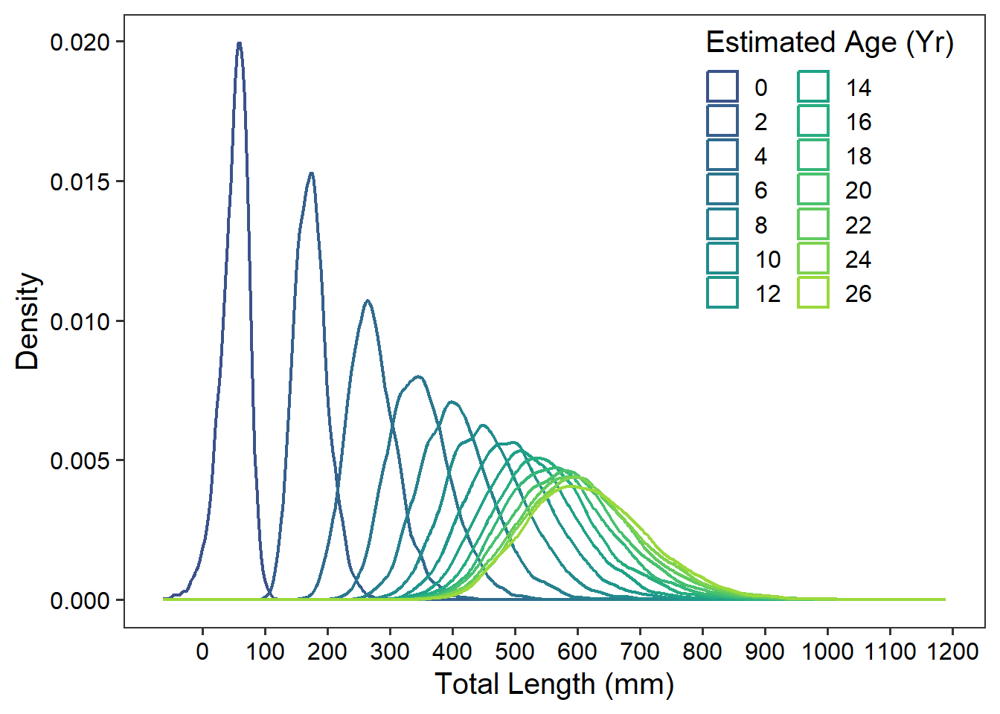
Posterior Distrubtion for von Bertalanffy Growth Model Ridgeline Plot
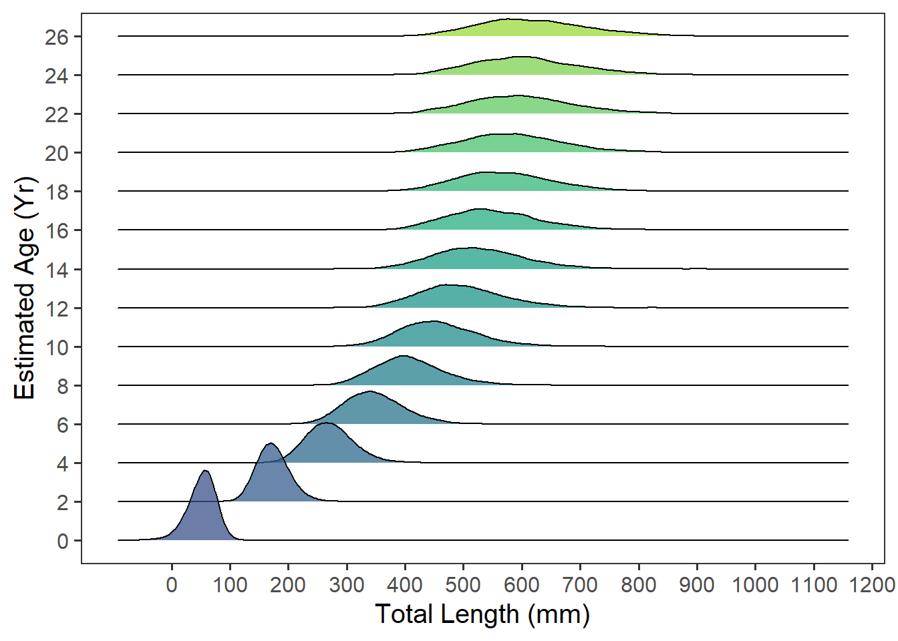
Posterior Distrubtion for von Bertalanffy Growth Model for each basin
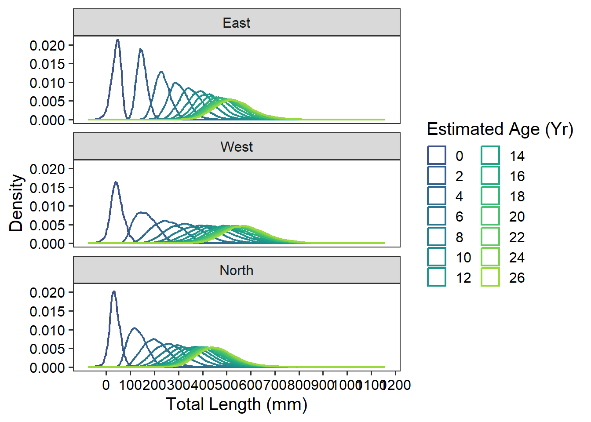
Posterior Distrubtion for von Bertalanffy Growth Model for each basin Ridgeline plot
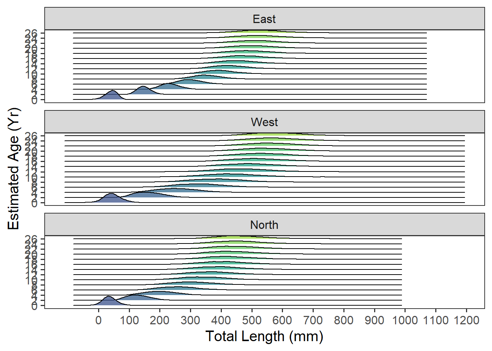